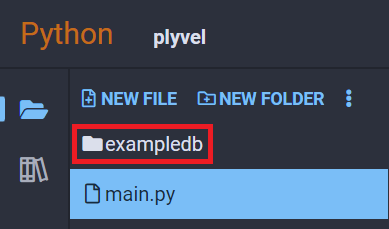

Plyvel
Plyvel is a Python library that provides an interface to LevelDB. LevelDB is a simple datastore which exclusively maps byte strings to byte strings. This database is best used when you will always know the keys you will be accessing and don't need advanced database features like querying.
Examples
Create, Update, and Read Keys
Using db.put to write to the same key multiple times will simply overwrite the value in the database, so create and update operations are done the exact same way:
import plyvel
db = plyvel.DB('exampledb', create_if_missing=True)
db.put(b'example_key', b'example_value1')
print(db.get(b'example_key'))
db.put(b'example_key', b'example_value2')
print(db.get(b'example_key'))
Output:
b'example_value1'
b'example_value2'
Note
In our example, we used the argument create_if_missing=True. This will automatically create the database folder and put into your project's file list if it doesn't already exist. Since we used 'exampledb' in our code above, you can see it added in your project's file list to the left:

Delete Keys
You can also delete keys with the db.delete() method:
import plyvel
db = plyvel.DB('exampledb', create_if_missing=True)
db.put(b'example_key', b'example_value')
print(db.get(b'example_key'))
db.delete(b'example_key')
print(db.get(b'example_key'))
Output:
b'example_value'
None
Iterate Over All Keys
When a new key is inserted into the database, it is stored (and later returned) in lexicographical order:
import plyvel
db = plyvel.DB('exampledb', create_if_missing=True)
db.put(b'z', b'zval')
db.put(b'A', b'Aval')
db.put(b'2', b'2val')
db.put(b'1', b'1val')
db.put(b'a', b'aval')
for key, value in db:
print(key, value)
Output from print:
b'1' b'1val'
b'2' b'2val'
b'A' b'Aval'
b'a' b'aval'
b'z' b'zval'
Reference
- Plyvel at plyvel.readthedocs.io